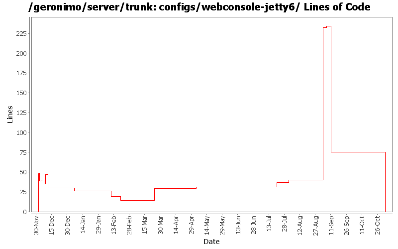

[root]/configs/webconsole-jetty6
 src
(0 files, 0 lines)
src
(0 files, 0 lines)
 main
(0 files, 0 lines)
main
(0 files, 0 lines)
 plan
(0 files, 0 lines)
plan
(0 files, 0 lines)
 resources
(0 files, 0 lines)
resources
(0 files, 0 lines)
 META-INF
(0 files, 0 lines)
META-INF
(0 files, 0 lines)
 plan
(0 files, 0 lines)
plan
(0 files, 0 lines)
 site
(0 files, 0 lines)
site
(0 files, 0 lines)

| Author | Changes | Lines of Code | Lines per Change |
|---|---|---|---|
| Totals | 28 (100.0%) | 536 (100.0%) | 19.1 |
| djencks | 10 (35.7%) | 473 (88.2%) | 47.3 |
| jdillon | 4 (14.3%) | 33 (6.2%) | 8.2 |
| jbohn | 4 (14.3%) | 13 (2.4%) | 3.2 |
| kevan | 2 (7.1%) | 12 (2.2%) | 6.0 |
| prasad | 5 (17.9%) | 4 (0.7%) | 0.8 |
| hogstrom | 1 (3.6%) | 1 (0.2%) | 1.0 |
| pmcmahan | 1 (3.6%) | 0 (0.0%) | 0.0 |
| dims | 1 (3.6%) | 0 (0.0%) | 0.0 |
GERONIMO-3565. Configs distributed amongst framework/configs and plugins
0 lines of code changed in 3 files:
* create plugin
1 lines of code changed in 1 file:
Clean up a lot more configs so geronimo-plugin.xml is reasonable. Make use of local maven repo more likely to work. Trim framework down to actual minimal size.
5 lines of code changed in 1 file:
GERONIMO-3330 GERONIMO-3453 More changes. Car-maven-plugin now uses same format for the plugin bits as the geronimo-plugin.xml
190 lines of code changed in 1 file:
GERONIMO-3330 GERONIMO-3453 Use the new plugin schema Paul came up with. Use jaxb for geronimo-plugin xml handling. Modify the car-maven-plugin to generate geronimo-plugin.xml and explicitly specify the dependencies for the plan in pom.xml. This introduces several more jaxb libraries in lib which I hope can be removed again. Also the console plugin handling is barely working.
193 lines of code changed in 1 file:
* updated copyright date to 2007
3 lines of code changed in 1 file:
Changed trunk to 2.1-SNAPSHOT
1 lines of code changed in 1 file:
GERONIMO-3338 Add Xerces dependency to admin console. Castor requires it
6 lines of code changed in 1 file:
GERONIMO-3138 seems to require tomcat webconsole to have an orb available
8 lines of code changed in 1 file:
GERONIMO-2965 GERONIMO-3008 GERONIMO-3010 Tomcat annotation processing with lots of other improvements. Uses LifecycleProvider interface proposed in GERONIMO-3010
15 lines of code changed in 1 file:
r6663@Bliss: jason | 2007-03-18 15:28:48 -0700
Branch for server/trunk re-org
r6664@Bliss: jason | 2007-03-18 15:38:19 -0700
New parent dir
r6665@Bliss: jason | 2007-03-18 15:41:22 -0700
new dir
r6666@Bliss: jason | 2007-03-18 15:48:27 -0700
Repackage amq stuff into org.apache.geronimo.activemq
r6667@Bliss: jason | 2007-03-18 15:57:00 -0700
Rename geronimo-activemq-gbean* modules to geronimo-activemq*
r6668@Bliss: jason | 2007-03-18 16:00:24 -0700
Fixing up packages
r6669@Bliss: jason | 2007-03-18 16:03:31 -0700
Drop gbean package
r6670@Bliss: jason | 2007-03-18 16:52:18 -0700
Update references to new activemq module names
2 lines of code changed in 1 file:
Normalize all configs/*/pom.xml headers
14 lines of code changed in 1 file:
Upgrade to Castor 1.0.5
1 lines of code changed in 1 file:
GERONIMO-2804 implement JSF support
- update the myfaces snapshot jars to avoid ELContext problem in its resolvers
- remove references to commons-taglibs where not needed or replace with references to jstl/jstl
- enable myfaces context listener in tomcat by providing new gbean property. tomcat's
default method for finding listeners in TLDs doesn't work with Geronimo's multiparent classloader.
- add org.apache.myfaces and org.apache.taglib to non-overrideable classes for webapps
- enable TLD processing in jetty context so that it can find the myfaces listener
- squelch spurious WARN messages from myfaces configuration startup
0 lines of code changed in 1 file:
remove commented out entry
0 lines of code changed in 1 file:
Use ${version} instead of ${pom.version} or ${geronimoVersion} for deps
Fixed some deps to use the DM config for their version, created missing DM for el spec
Drop duplicate annotation in DM
Using geronimo-jta_1.1_spec everywhere geronimo-jta_1.0.1B_spec was used before
Few comments on future version fixes that need to be made
Dropped some obvious copy-paste of pom scm and build elements which are uneeded
16 lines of code changed in 1 file:
GERONIMO-2686 missed the configs changes in previous commit
14 lines of code changed in 1 file:
GERONIMO-2536 moved dependency on jstl to web containers and web-2.5-builder and removed dependencies from console poms and deployment plans. Not sure if this is the best approach but it can be changed later if necessary.
0 lines of code changed in 1 file:
GERONIMO-2536 moved reference to java.net repository to individual components from root pom.xml
Still need to remove dependencies from console configs so they are included when deployed.
12 lines of code changed in 1 file:
GERONIMO-2536 Update jetty6 and tomcat jee5 assemblies to include jstl 1.2 from glassfish
Also update jspc-maven-plugin to 1.4.7-SNAPSHOT to pick up jgenender's inclusion of jasper 6 (Thanks Jeff)
1 lines of code changed in 1 file:
GERONIMO-2636 Jetty6 using jasper from tomcat 6 for the JSP 2.1 support
Also moved tomcat version specification to dependency management in root pom
0 lines of code changed in 1 file:
GERONIMO-2537 Fix notices and src headers in recent jee5 updates. Update Web Console notice.txt w/ ibm donation information, add copyright to assembly notice files, and remove ASF v 1.1 license from source borrowed from xerces project
6 lines of code changed in 1 file:
GERONIMO-2616 move all tx stuff to the transaction-jta1.1 config.
0 lines of code changed in 1 file:
GERONIMO-2616 Copy jee5 work from sandbox, make it build in normal build
48 lines of code changed in 3 files: